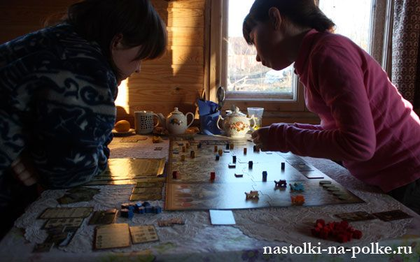
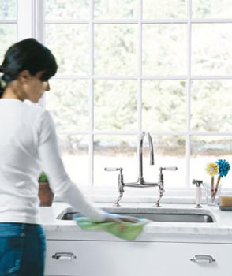

Порядок в доме и в голове | karpachoff.com
2020.10.11 01:02
Главная Блог О семье О детях О себе On-line школа
Порядок в доме и в голове
В одной болгарской сказке рассказывается о старике, который задумал женить сына но непременно на девушке аккуратной и работящей. Однажды, нагрузив телегу плодами своего сада, он отправился в соседнее село и принялся всем на удивление кричать: Меняю свежие фрукты на мусор! Многие поспешили воспользоваться этой причудой и понесли старику на обмен мешки разного сора. Только одна девушка принесла маленький узелок, посетовав, что больше мусора в доме не нашлось. К ней-то старик и заслал сватов и, говорят, не ошибся: хозяйка она оказалась замечательная, и молодая семья зажила в радости и достатке.
Сегодня, заходя в иной дом, сразу вспоминаешь старую сказку. При виде разбросанных вещей, немытой посуды, многодневного слоя пыли трудно подавить усмешку: видно, эта семья создавалась по иным принципам сватовства. А где-то царит порядок, граничащий со стерильностью, и даже боязно что-то задеть или просто подвинуть. Трудно удержаться от комплимента хозяйке и не порадоваться за благополучие в доме. Хотя, как это ни странно, благополучие присутствует тут совсем не обязательно. Бывает, что в прибранном доме царит атмосфера напряжения и недовольства. А бывает и наоборот: в захламленной квартире люди живут душа в душу, довольны собою и друг другом. Отчего так происходит?
Американский философ Уильям Джемс считал, что в структуру человеческой личности, помимо способностей и интересов, убеждений и пристрастий, следует включить и всё то, что человек считает своим: и любимые книги на домашней полке, и повседневную одежду, копирующую своими складками форму нашего тела, и дорогие сердцу вещицы, и многое другое. Это своего рода наше физическое Я, в котором не менее явно, чем в словах и поступках, отражается наш внутренний мир. Убранство дома неотъемлемый элемент этого физического Я, и, оглядев внимательно жилище, многое можно сказать о его обитателях. Конечно, первое, что бросается в глаза, это порядок или беспорядок. Что же эго может значить с точки зрения психологии?
Ответ, казалось бы, напрашивается сам собой. Беспорядок верный признак недисциплинированности и неаккуратности, а значит, вероятно, и общей разболтанности и необязательности. И наоборот, идеальный порядок свидетельство душевной гармонии и твердых принципов. Однако такое объяснение слишком просто, чтобы быть абсолютно верным. Ибо жизнь на каждом шагу подсказывает иные, не столь однозначные выводы.
Почти все родители подростков сетуют на неаккуратность своих детей, на то, что невозможно заставить их соблюдать порядок в своей комнате. Дело в том, что интересы растущего человека очень широки, направлены главным образом во внешний мир и мало привязаны к мелким материальным подробностям быта. Только ощутив на себе все неудобства, которые несет беспорядок, подросток постепенно приобретает аккуратность. Когда нужные номера телефонов записываются на случайных клочках, когда не знаешь, куда засунул необходимую вещь; когда место, предназначенное для занятий или встречи с друзьями, оказывается безобразно захламлено, поневоле начинаешь заботиться о порядке. Конечно, даже самых маленьких детей учат убирать за собой игрушки и класть вещи на место. Но настоящую аккуратность человек приобретает значительно позднее лишь став зрелой личностью. До этого необходимость порядка ему просто неведома. Ведь росту чужда стабильность.
Значит ли это, что беспорядок к доме свидетельствует: хозяину (или хозяйке) так и не удалось по-настоящему повзрослеть? Может быть и так, и человек живег «без руля и ветрил», во всем поступая, подобно малому дитя. Но проблема может лежать и глубже. В конце концов, все мы понимаем: нехорошо разбрасывать вещи где попало. Если же человек оказывается хронически неспособен навести в доме порядок, то это может свидетельствовать о серьезном внутреннем конфликте. Разбросанная одежда, накопившийся мусор и т.п. словно твердят за хозяина дома: я не властен ни над собою, ни над окружающим миром, не способен поставить вещи на свои места. Раковина, полная немытой посуды; переполненное мусорное ведро; неделями накапливаемое грязное белье добавляют: я не умею распределять свои силы, ставить перед собой задачи и планомерно их решать. Очевидно: если человек не умеет организовать мелкие подробности своего быта, то и задачи посерьезнее ему едва ли по плечу.
Не кажется ли вам, что дела ваши не спорятся, все идет не так, как хотелось бы, и вообще все серьезные жизненные ситуации вышли из-под контроля? Наверняка хотелось бы перебороть это неприятное ощущение. Начните с малого. Оглядите свое жилище прямое продолжение вашего Я и заметьте, где требуется навести порядок. Раскладывая по полочкам разбросанные вещи, вы в действительности делаете намного больше: учитесь и все свои проблемы упорядочивать, «раскладывать по полочкам». Внесите ясность в свое «физическое Я», и тогда более ощутимые результаты не заставят себя ждать.
Тут, однако, возможна и другая крайность. Психологи обратили внимание, что чрезмерная приверженность к чистоте и порядку часто выступает симптомом внутренней слабости, неуверенности в себе. Педантично упорядочивая доступный физический мир своего дома, человек словно стремится защититься от хаоса большого внешнего мира, который слишком сложен и даже страшен. Но тем самым он порождает замкнутый круг напряжения: любая вещь, кем-то из домашних поставленная не на свое место, раздражает и приносит огорчение. Работа по дому начинает отнимать слишком много времени и сил, не оставляя места для более важных дел. В итоге неизбежно ощущение одиночества в своей выскобленной скорлупе.
Такую ловушку может подстроить нам жизненный сценарий, усвоенный еще в родительской семье: когда порядок любой ценой становится важнейшей жизненной целью. Можно только пожалеть человека, чья главная задача белоснежные полотенца и блестящий паркет. Порядок в доме это не цель, а необходимое условие, средство для решения по-настоящему серьезных жизненных задач. Поняв эту простую истину, мы и найдем ту золотую середину, которая и отличает подлинную гармонию материальную и душевную.
Автор: Сергей Степанов
Взято с сайта http://adalin.mospsy.ru/r_03_00/r_03_01b.shtml
Похожие записи
Что такое СДВГ: причины, признаки, как избавиться, основные мифы
Как сохранить отношения на расстоянии: 10 советов сохранения отношений
Как стать счастливой 10 ключевых правил
О нас
Добро пожаловать на мой сайт где вы найдёте множество важной информации которую будет просто получить.
Полезные ссылки
Политика конфиденциальности Договор офертыПоследние записи
Что такое СДВГ: причины, признаки, как избавиться, основные мифы
Как сохранить отношения на расстоянии: 10 советов сохранения отношений
Как стать счастливой 10 ключевых правил
Наши контакты
+38 (063) 437 94 60
+38 (063) 842 83 96
info@karpachoff.com
karpachoff.com
- Как сохранить порядок в доме.
- Как сохранить порядок в доме наведение порядка в квартире ...
- 9 советов, как поддерживать порядок в доме | homify | homify
- 5 методов Как сохранить порядок в доме - 100500metod
- порядок в доме? да ну, что вы... у меня трое детей... А ...
- Как навести порядок в доме за 28 дней: strana_flymamia ...
- Порядок в доме и в голове | karpachoff.com
- Как раз и навсегда навести порядок в доме
- Шикарные идеи как сохранить порядок в доме » 1000prikolov ...
- Как провести уборку в квартире, доме: периодичность и ...
- Как сохранить порядок в доме.
Возможно, вы не раз удивлялись, как в некоторых домах всегда царствуют порядок и чистота. Вы думаете, что для этого нужно много времени, но это не всегда так. Просто нужно упорство и выполнение рутинных действий ...
- Как сохранить порядок в доме наведение порядка в квартире ...
Уборка в доме – это не всегда приятное занятие, однако проводить ее необходимо. Как правильно подойти к этому вопросу и обеспечить максимальную чистоту в жилом
- 9 советов, как поддерживать порядок в доме | homify | homify
Все о том, как отключить газ в квартире для тех, кто хочет перейти с газа на электричество или отказаться от газа по другим причинам. Преимущества и недостатки такого решения, порядок действий, документы, возможнфе ...
- 5 методов Как сохранить порядок в доме - 100500metod
Как сохранить порядок в доме. Проблема сохранения уюта и порядка в доме волнует многих женщин. Так сложно в повседневной суете найти время для уборки и разгребания накопившихся завалов.
- порядок в доме? да ну, что вы... у меня трое детей... А ...
Скоро весна! Значит пора вздохнуть поглубже. Чувствуете, что нечем дышать? ПЫЛЬ!!! Итак генеральная уборка ужасает своими масштабами...сразу опускается одна рука, потом вторая.... И глаза хочется закрыть, чтоб не видеть ...
- Как навести порядок в доме за 28 дней: strana_flymamia ...
Как создать такую атмосферу в доме, чтобы каждый член семьи чувствовал себя в нём хозяином, заботился о чистоте и уюте и поддерживал порядок. Вот тут у меня затык.
- Порядок в доме и в голове | karpachoff.com
Как сохранить порядок в доме Работа, готовка, стирка, глажка, уроки с детьми – это далеко не все, чем занимается женщина в течение одного дня.
- Как раз и навсегда навести порядок в доме
Навести порядок в доме проще, чем поддерживать в нем порядок. Вот несколько правил, которые помогут в этом: Первое правило Нужно сортировать и избавляться от ненужного!
- Шикарные идеи как сохранить порядок в доме » 1000prikolov ...
Как похудеть в домашних условиях(без рекл 5 методов Как сохранить порядок в доме 5 лучших методов борьбы с похмельем УТОПЛЕНИЕ: ВИДЫ, ПРИЗНАКИ ,Первая помощь.
- Как провести уборку в квартире, доме: периодичность и ...
Шикарные идеи как сохранить порядок в доме. Дома у каждой девушки, как вы знаете, полным-полно всяких мелочей. И все кисточки, сережечки, резиночки, карандашики непременно необходимо для ...
Возможно, вы не раз удивлялись, как в некоторых домах всегда царствуют порядок и чистота. Вы думаете, что для этого нужно много времени, но это не всегда так. Просто нужно упорство и выполнение рутинных действий ...
Уборка в доме – это не всегда приятное занятие, однако проводить ее необходимо. Как правильно подойти к этому вопросу и обеспечить максимальную чистоту в жилом
Все о том, как отключить газ в квартире для тех, кто хочет перейти с газа на электричество или отказаться от газа по другим причинам. Преимущества и недостатки такого решения, порядок действий, документы, возможнфе ...
Как сохранить порядок в доме. Проблема сохранения уюта и порядка в доме волнует многих женщин. Так сложно в повседневной суете найти время для уборки и разгребания накопившихся завалов.
Скоро весна! Значит пора вздохнуть поглубже. Чувствуете, что нечем дышать? ПЫЛЬ!!! Итак генеральная уборка ужасает своими масштабами...сразу опускается одна рука, потом вторая.... И глаза хочется закрыть, чтоб не видеть ...
Как создать такую атмосферу в доме, чтобы каждый член семьи чувствовал себя в нём хозяином, заботился о чистоте и уюте и поддерживал порядок. Вот тут у меня затык.
Как сохранить порядок в доме Работа, готовка, стирка, глажка, уроки с детьми – это далеко не все, чем занимается женщина в течение одного дня.
Навести порядок в доме проще, чем поддерживать в нем порядок. Вот несколько правил, которые помогут в этом: Первое правило Нужно сортировать и избавляться от ненужного!
Как похудеть в домашних условиях(без рекл 5 методов Как сохранить порядок в доме 5 лучших методов борьбы с похмельем УТОПЛЕНИЕ: ВИДЫ, ПРИЗНАКИ ,Первая помощь.
Шикарные идеи как сохранить порядок в доме. Дома у каждой девушки, как вы знаете, полным-полно всяких мелочей. И все кисточки, сережечки, резиночки, карандашики непременно необходимо для ...
 